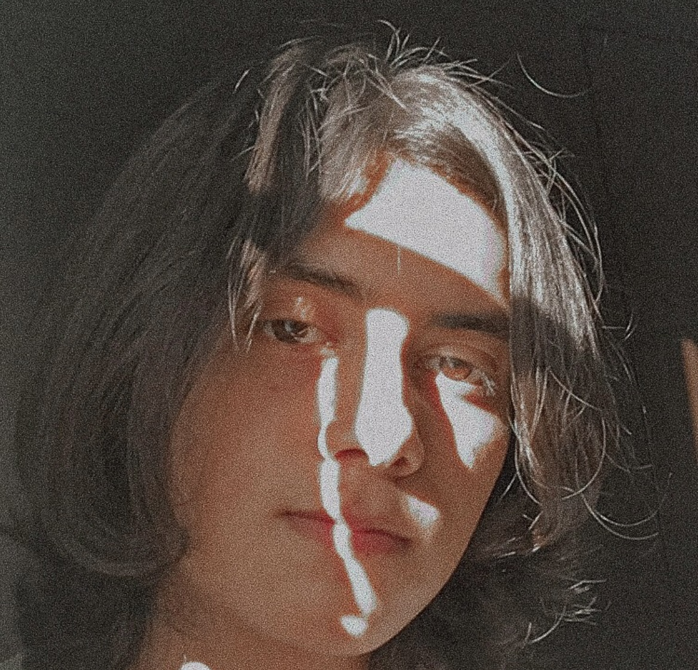

Experiencias
- Intros 3D:
Cuento con 3 años de experiencia trabajando con intros 3D, para personas y canales de Youtube, todo esto manejando C4D y After Effects.
- Edits:
Cuento con 1 año de experiencia creando "edits" de fotos y videos para el general de personas, esto con la ayuda de solamente usar After Effects.
- Photoshop:
Cuento con 1 año de experiencia trabajando para Youtubers, creando miniaturas y aprendiendo Photoshop, me especializo mas en ,Social Media Post, Efectos y Montajes.
- Blender:
Cuento con 1 año aprendiendo el modelado basico de blender, de igual forma he trabajado creando 1 logo para un Youtuber en 3D.
- Beats:
Creo emo trap beats y remix con Fl Studio, he trabajado creando pequeños beats para pequeños artistas.
- Video Editor:
Cuento con 5 años creando y editando videos, he trabajado como editor y compositor en 1 canal de Youtube.
- Youtube:
Creo contenido para Youtube desde el 2015, he hecho varios videos y canales sobre diferentes temas, asi como tener una constante meta en llegar a mas publico.